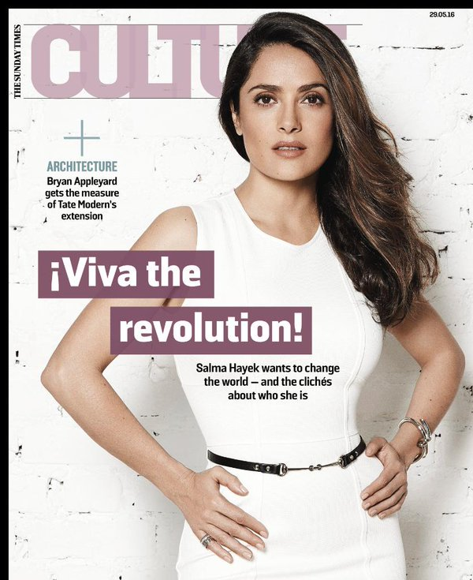
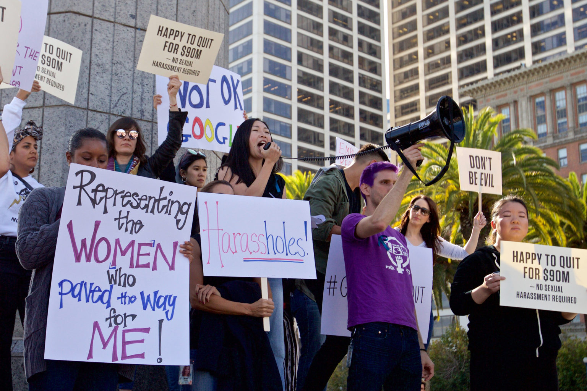

Salma describes harvey weinstein as “her monster”, as he tormented her verbally for many years. Once, he even threatened to kill her if she revealed any of his actions. Salma Hayek stated information that most of this happened in the movies they were both involved in, the main one being the movie reflecting Frida Kahlo's life. Countless times throughout the movie Weinstein demanded more sexual interactions between Frida and other women, more times that Hayek would be disrobed. It seemed as if that was all he cared about, not even capturing the intense emotion and trauma that Frida Kahlo went through.
She states that so many women inspired her yet at the same time made her feel guilty, since her story was a slight drop in the ocean while theirs was a crashing wave. This inspiring actress and activist was one of the first women to publicize her sexual assault accusations on Weinstein. Women besides Salma Hayek made their voices heard, and currently Harvey Weinstein is enduring trials, and even pressed charges.

Harvey Weinstein would ask Hayek to watch him take a shower. Ask if he could watch her shower. Ask if he could give her a massage unclothed. Ask if his friend could give her a massage unclothed. Ask if she could sleep with him. Ask if she could sleep with other women. And all these times, Hayek would respond NO every time.
